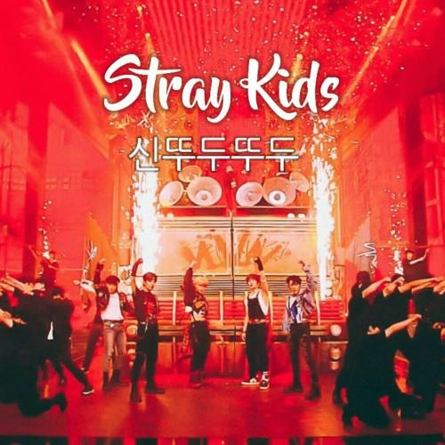

SKZ 4th Gen Leaders
Stray Kids Principais Stages:

God's DDU-DU DDU-DU - Stray Kids
God's Ddu du ddu du foi um mash-up de duas músicas God's Menu do próprio Stray Kids
e DDU-DU DDU-DU do BLACKPINK, essa performance foi apresentada no 8° episódio do
Kingdom Legendary War. Eles ficaram em segundo lugar nessa etapa da competição.
Performance Completa

Victory Song Performance no MAMA 2020
Full Performance

CHEESE MAMA 2021
Performance Completa

God's Menu X Side Effects
Essa foi a primeira apresentação deles depois do hiatos do Hyunjin
e
Performance Completa

I'll Be Your Man (Cover BTOB)
Performance Completa